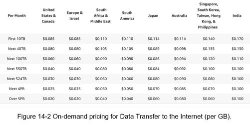

As revealed in Figure 14-1, besides watching a video, you can do a lot more on YouTube. For example, comment, share, or like a video, save a video to playlists, subscribe to a channel, etc. It is impossible to design everything within a 45- or 60-minute interview. Thus, it is important to ask questions to narrow down the scope.
Candidate: What features are important?
Interviewer: Ability to upload a video and watch a video.
Candidate: What clients do we need to support?
Interviewer: Mobile apps, web browsers, and smart TV.
Candidate: How many daily active users do we have?
Interviewer: 5 million
Candidate: What is the average daily time spent on the product?
Interviewer: 30 minutes.
Candidate: Do we need to support international users?
Interviewer: Yes, a large percentage of users are international users.
Candidate: What are the supported video resolutions?
Interviewer: The system accepts most of the video resolutions and formats.
Candidate: Is encryption required?
Interviewer: Yes
Candidate: Any file size requirement for videos?
Interviewer: Our platform focuses on small and medium-sized videos. The maximum allowed video size is 1GB.
Candidate: Can we leverage some of the existing cloud infrastructures provided by Amazon, Google, or Microsoft?
Interviewer: That is a great question. Building everything from scratch is unrealistic for most companies, it is recommended to leverage some of the existing cloud services.
In the chapter, we focus on designing a video streaming service with the following features:
•Ability to upload videos fast
•Smooth video streaming
•Ability to change video quality
•Low infrastructure cost
•High availability, scalability, and reliability requirements
•Clients supported: mobile apps, web browser, and smart TV
The following estimations are based on many assumptions, so it is important to communicate with the interviewer to make sure she is on the same page.
•Assume the product has 5 million daily active users (DAU).
•Users watch 5 videos per day.
•10% of users upload 1 video per day.
•Assume the average video size is 300 MB.
•Total daily storage space needed: 5 million * 10% * 300 MB = 150TB
•CDN cost.
•When cloud CDN serves a video, you are charged for data transferred out of the CDN.
•Let us use Amazon’s CDN CloudFront for cost estimation (Figure 14-2) [3]. Assume 100% of traffic is served from the United States. The average cost per GB is $0.02. For simplicity, we only calculate the cost of video streaming.
•5 million * 5 videos * 0.3GB * $0.02 = $150,000 per day.
From the rough cost estimation, we know serving videos from the CDN costs lots of money. Even though cloud providers are willing to lower the CDN costs significantly for big customers, the cost is still substantial. We will discuss ways to reduce CDN costs in deep dive.
